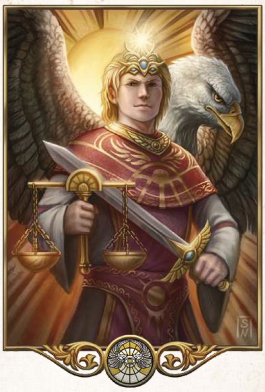

"Wir sind gesandt, die Ordnung auf die Welt zu bringen. Ein jeder soll wissen, wo sein Platz ist in der Welt, nach den Fähigkeiten, die die guten Götten ihm gaben."
Aspekte: Ordnung, Herrschaft, Wahrheit, Gerechtigkeit
Symbole/Wahrzeichen: Sonne, Licht
Heiliges Tier: Greif
Praios wird als Götterfürst und Gott der Fürsten gleichermaßen verehrt. Meist wird er als Mann mit Greifenkopf dargestellt und Greifen gelten auch als seine Sendboten. Im Zwölfgötterglauben ist er der Oberste der Zwölfe und hat als Gott von Ordnung, Recht und Wahrheit besonders für viele Adlige große Bedeutung. Als Sonne (auch: Praiosauge) zieht et täglich seine Bahn und das strahlende Licht seines alldurchdringenden Auges vertreibt allen Schatten. Lügen und Ugehorsam sind ihm ein Graus und viele seiner meist sehr bestimmend auftretenden Geweihten lehnen Zauberei als ordnungsstörend ab. Gemäßigte Glaubensvertreter allerdings akzeptieren weiße Magie, so sie aus wahrhaftigen Gründen und im Sinne der Weltordnung genutzt wird. Verehrt wird Praios vor allem von solchen, die Recht sprechen und sich Gerechtigkeit erhoffen, aber viele Gläubige flehen ihn auch als Schutzpatron gegen Unheil und finstere Zauberei an. Sein prächtiger Haupttempel ist die Stadt des Lichts in Gareth, oberste Vertreter der Praioskirche ist der Bote des Lichts.